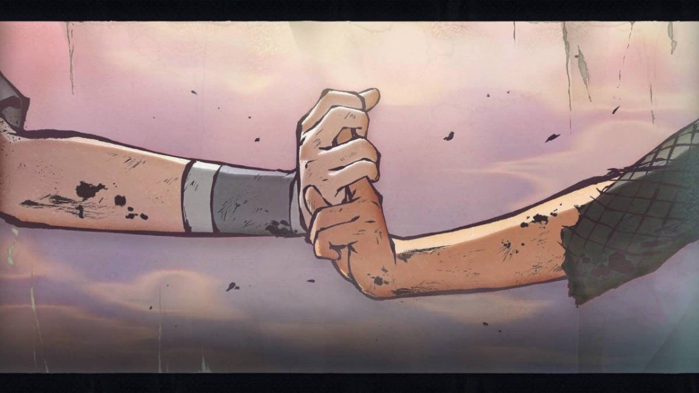

一些好玩的 CSS 属性
CSS里有一些属性，虽然可能有点生僻或少用，但其中还是有好玩的而且实用的。记录一下，持续更新。
background-clip
通俗来讲，可以通过这个属性设置背景的显示位置，个人觉得当你想给文字本身加颜色渐变的时候才用得到，比如：渐变文字。可选参数直接使用示例表达：
border-box
padding-box
content-box
text
可编辑样式框
backdrop-filter
当元素背景透明度不为1时，可使用该属性改变元素背后区域的滤镜显示效果，和filter类似，比如毛玻璃效果。
如果使用transition来切换该节点的显示隐藏，第一次渲染的时候可能会有稍微卡顿，之后则不会。

backdrop-filter
可编辑样式框
caret-color
设置光标颜色。
pointer-events
当设置其值为none时，可以使元素实现点击穿透效果。当鼠标与元素交互（click、hover等）时，事件只会指向它的父元素。
除下面两个值，其它值一般用于<svg>，更多说明：
-
auto:
相当于未设置 -
none:
取消鼠标交互事件
scroll-behavior💻
设置容器平滑滚动，以前常用的做法是使用时间函数（如jQuery的$(document).animate()），相比之下，使用该属性则更加的快速和方便，只是不能设置滚动时长和运动函数而已。可以点击属性列表里的导航进行测试，可设置的值有：
-
auto:
立即滚动，相当于未设置 -
smooth:
开启平滑滚动
scroll-snap-type💻
该属性规定如何处理容器滚动后元素停留的位置。例如全屏滚动可以尝试使用该属性，而不必再去写JS去完成这种功能。兼容性的话，只有较少数浏览器不支持。
1
2
3
4
5
可编辑样式框
可以设置的值有：
-
[x, y, both] mandatory:
强制容器滚动后停留在规定的位置 -
[x, y, both] proximity:
规定容器滚动后，按停留的位置判断是否再做额外的滚动（该行动结果可能和mandatory一致）